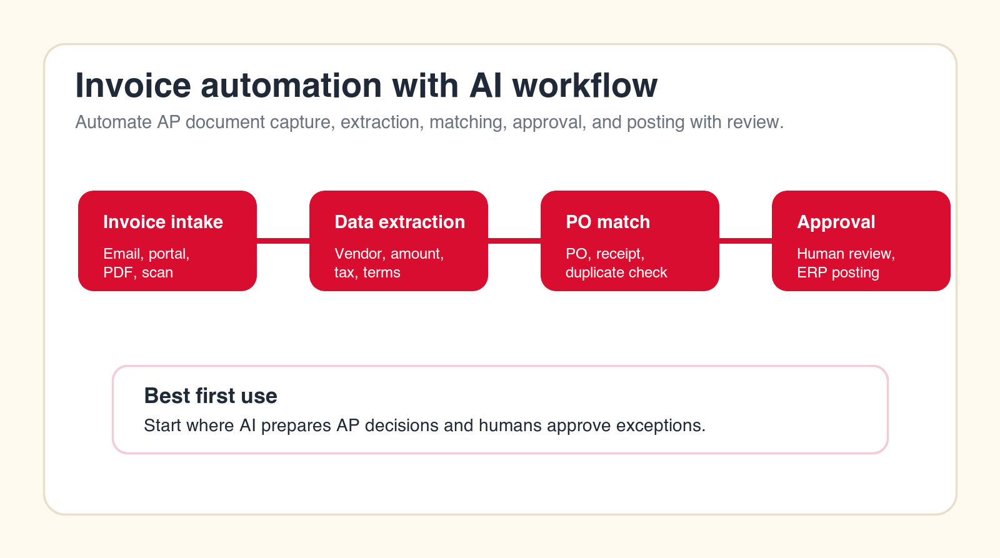
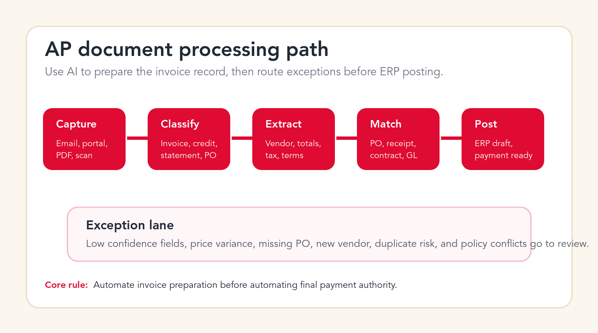
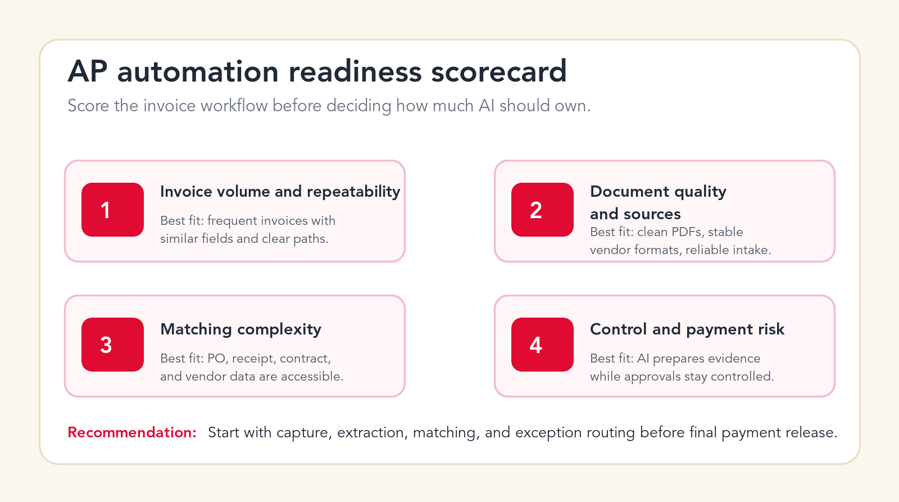

Invoice Automation With AI: How to Automate AP and Document Processing
AI can remove a large amount of manual accounts payable work, but only when invoice capture, extraction, matching, approvals, and ERP posting are built with finance controls from the start.

Best first rule
Let AI prepare the AP decision, then let humans approve exceptions and high-risk payments.
Focus
Invoice automation with AI
Best for
AP and finance teams
What it covers
Invoice review and approvals
Main service
Custom AI Solutions
TL;DR
The best first invoice automation with AI project is not full autopay. Start by automating invoice intake, document classification, OCR and field extraction, vendor matching, PO and receipt matching, duplicate detection, tax and terms validation, exception routing, approval packet creation, GL coding suggestions, ERP draft posting, payment readiness reporting, and audit trail preparation. Keep humans in control of vendor bank changes, disputed invoices, final payment release, fraud risk, and policy exceptions until the workflow is tested.
Invoice automation with AI is one of the clearest places to reduce manual work in finance. Accounts payable teams handle repeated documents, repeated fields, repeated checks, repeated approvals, and repeated follow-ups. Those patterns are exactly where AI document processing and workflow automation can help. The opportunity is real, but the implementation has to respect the finance environment.
AP is not just paperwork. It touches vendor trust, cash flow, fraud control, taxes, expense recognition, purchase orders, inventory receipt, budget ownership, and month-end close. A weak automation can create duplicate payments, missed credits, late fees, approval confusion, audit gaps, and vendor frustration. A strong automation can reduce cycle time while making the process easier to review.
This guide explains how to automate AP and document processing with AI in a practical way. It is written for finance leaders, operations teams, founders, controllers, and business owners who want more than a basic OCR tool. The goal is a controlled AP workflow where AI prepares the work, systems keep records clean, and humans still own the decisions that carry financial risk.
Quick Answer: Automate Invoice Preparation Before Final Payment Release
The safest way to start is to automate the preparation layer of accounts payable. Let AI collect invoices, classify document types, extract supplier names, invoice numbers, dates, totals, tax amounts, line items, payment terms, and purchase order references. Then let the workflow match that information against vendor records, purchase orders, receipts, contracts, and prior invoices. When confidence is high, the system can prepare an ERP draft or approval packet. When confidence is low, it should route the invoice to the right reviewer with a clear reason.
Do not begin with an AI system that can pay every invoice automatically. That sounds efficient, but it puts the riskiest decision at the center of the first pilot. A better first project gives the AP team a faster queue, cleaner extracted data, better exception notes, and fewer repetitive checks. Once the organization trusts the extraction, matching, routing, and audit trail, more automation can be added.
A good AP automation project should answer five questions before build work starts: where do invoices enter the business, which data must be extracted, which systems need to be checked, which exceptions require human review, and what record must be kept for audit and reporting. If those questions are unclear, the company does not need more AI. It needs workflow design.
| AP stage | What AI can automate | Human control point | Main risk |
|---|---|---|---|
| Invoice intake | Collect PDFs, scans, emails, portal downloads, and attachments. | Approve trusted intake sources and vendor channels. | Missing invoices or duplicate intake. |
| Data extraction | Read vendor, invoice number, dates, totals, tax, terms, and line items. | Review low-confidence fields and new formats. | Wrong amount, date, vendor, or tax value. |
| Matching | Compare invoice data to purchase orders, receipts, contracts, and vendor records. | Review price variance, missing PO, missing receipt, and contract mismatch. | Paying the wrong invoice or blocking a valid one. |
| Approval and posting | Prepare approval packet, GL suggestion, ERP draft, and payment readiness notes. | Approve exceptions, final posting rules, and payment release. | Weak audit trail or payment authority leakage. |
What Invoice Automation With AI Actually Means
Invoice automation with AI means using AI document processing, rules, integrations, and controlled agents to move invoices through accounts payable with less manual handling. It can include OCR, document classification, field extraction, vendor recognition, purchase order matching, duplicate detection, tax and terms validation, approval routing, ERP posting preparation, exception handling, and reporting.
The phrase can be confusing because many products call themselves invoice automation software. Some are mostly OCR tools. Some are AP workflow systems. Some are ERP modules. Some are AI document platforms. Some are general automation tools that require custom work. A business does not need the fanciest label. It needs the right workflow for its invoice volume, vendor mix, approval model, and accounting system.
A modern AI workflow is different from older invoice automation because it can interpret messier documents, learn patterns from repeated formats, summarize exceptions, draft reviewer notes, and connect multiple records. But AI still needs boundaries. It should not invent missing invoice data, assume a vendor bank change is safe, or override approval policy because a document looks normal.

The AP Process Map Before You Automate
Before choosing tools or building an AI agent, map the AP process from document arrival to payment readiness. This sounds basic, but it is where many projects fail. Teams often know the visible steps, yet miss the hidden decisions that AP staff make every day: which vendor names are aliases, which cost center owns a recurring bill, which manager approves a non-PO invoice, which supplier format often has tax problems, and which invoices should never be rushed.
A useful process map shows invoice sources, document types, required fields, matching logic, review owners, approval thresholds, ERP fields, payment timing, exception types, and reporting needs. It should also show what happens when the AI is uncertain. If the only fallback is "send to AP," the team has not designed the workflow deeply enough. Exceptions should have reasons, owners, and next actions.
This is where an AI automation agency can be useful. The agency should not begin by promising a magic AP bot. It should help document the workflow, identify the best first automation stage, connect the right systems, define human review, and launch a pilot that finance can trust.
Free AP automation check
Find the safest invoice workflow to automate first.
Drop your email and we will send a first-pass recommendation for where AI can reduce AP work without weakening finance controls.
No spam. We use this to reply with the recommendation.
1. Invoice Intake From Email, Portals, PDFs, and Scans
Invoice intake is the first workflow to review because messy intake creates messy automation. Invoices may arrive through shared AP inboxes, supplier portals, personal email addresses, scanned mail, cloud folders, expense systems, field teams, or customer project managers. If the company does not control where invoices enter, it cannot reliably control what happens next.
AI can help by monitoring approved inboxes and folders, identifying invoice attachments, separating invoices from statements or marketing files, creating a document record, and pushing the item into a central AP queue. It can also detect when the same invoice arrives from multiple channels. For businesses with portal-heavy vendors, automation can create tasks for portal downloads or connect to supported vendor sources where access is allowed.
The human control point is source policy. Finance should define which inboxes, folders, and portals are approved intake paths. The AI should not pull payment documents from random employee mailboxes without permission. It should also keep the original document attached to the AP record, because finance teams often need to prove what was received and when.
Start here if your AP team spends time chasing invoices, manually saving PDFs, renaming files, forwarding attachments, or checking whether an invoice was already received. Intake automation is not glamorous, but it improves every later stage.
2. Document Classification Before Extraction
Not every finance document should be processed the same way. A supplier invoice, credit note, statement, pro forma invoice, purchase order, delivery receipt, tax certificate, reminder notice, and contract addendum all carry different meaning. If the automation treats them as the same object, the AP workflow will create noise.
AI can classify document type before extracting fields. It can identify whether the file is an invoice, a credit memo, a supplier statement, a duplicate copy, a payment reminder, or a supporting document. That classification determines the next step. An invoice may move to extraction. A statement may move to reconciliation. A credit note may need separate approval. A payment reminder may need matching against the AP ledger.
Classification also improves reporting. If the AP queue is full of documents that are not actually payable invoices, leaders may think the team has a volume problem when the real issue is intake quality. AI classification can show how much of the queue is actionable versus administrative.
The guardrail is simple: low-confidence classification should not move forward silently. If the AI is unsure whether a file is an invoice or statement, it should route the document for review. This keeps incorrect documents from polluting the ERP or approval queue.
3. OCR and Invoice Data Extraction
Data extraction is the stage most people think of first. The AI reads the invoice and extracts fields such as supplier name, invoice number, invoice date, due date, currency, subtotal, tax, freight, total, purchase order reference, payment terms, bank details, line item descriptions, quantities, unit prices, and tax codes. This is where AI document processing can save a large amount of manual keying.
Extraction quality matters more than extraction speed. A fast system that reads the wrong amount is worse than a slower system that asks for review. The automation should provide confidence scores for key fields and highlight which values were read from the document. It should also preserve the original invoice and show the exact source area when possible, so reviewers do not have to hunt through the PDF.
Some invoices are easy. Clean digital PDFs from recurring vendors with stable formats are strong candidates. Others are harder: scans, photos, multi-page invoices, handwritten notes, mixed currencies, missing PO references, unusual tax formats, and line items split across pages. The workflow should treat these differently instead of forcing every document through the same path.
Strong extraction automation should not only capture fields. It should validate the fields against finance rules. If the invoice number is missing, the tax calculation does not add up, the due date conflicts with terms, or the extracted vendor does not match the remittance details, the invoice should move to an exception queue.
4. Vendor Master Matching and Supplier Identity Checks
Vendor matching is where invoice automation becomes more than OCR. The AI must connect the document to the correct supplier record. Supplier names are often inconsistent. One vendor may use a legal entity name on contracts, a trade name on invoices, a shortened name in email, and a different remittance name on bank records. Manual AP teams learn these patterns over time. Automation needs a controlled way to handle them.
AI can compare the extracted supplier name, tax ID, address, email domain, bank information, purchase order references, and historical invoice patterns against the vendor master. It can suggest the likely vendor record and show why it made that match. This can reduce duplicate vendor creation and prevent invoices from being posted to the wrong supplier.
The risk is serious. Vendor identity mistakes can lead to payment errors or fraud exposure. Vendor bank details should never be changed by AI without a controlled verification process. New vendor creation, bank change requests, address changes, and remittance updates should require human review and approval.
A strong first implementation uses AI to recommend vendor matches, detect mismatches, and prepare a review packet. It does not let AI silently modify the vendor master. The vendor master is a control system, not just a contact list.
5. PO, Receipt, Contract, and Three-Way Matching
Matching invoices to purchase orders, receipts, contracts, or service approvals is one of the highest-value AP automation use cases. It is also one of the most sensitive because matching logic affects whether invoices move toward payment. A three-way match checks the invoice against the purchase order and goods receipt. A two-way match may check invoice against PO only. A non-PO invoice may need contract, budget owner, or department approval.
AI can help by finding PO references on the invoice, identifying likely purchase orders when the reference is missing, comparing line items, checking quantities, highlighting price variance, and preparing the reason an invoice did or did not match. It can also summarize differences in plain language for an AP reviewer or budget owner.
The workflow should not hide variance. It should make variance obvious. If the invoice total is higher than the PO, if the receipt is missing, if the quantity differs, if the contract rate is outdated, or if the supplier charged freight that was not expected, the reviewer should see the issue immediately.
This is a good stage to automate after extraction is reliable. Matching creates measurable value because it reduces manual comparison work, shortens approval cycles, and gives finance better visibility into why invoices are delayed.
6. Duplicate Invoice Detection
Duplicate invoices are a common AP problem. A supplier may resend an invoice after a reminder. A document may be forwarded by several employees. A portal invoice may also arrive by email. A scanned copy may be processed after the digital copy. The invoice number may include a space, dash, prefix, or formatting difference that makes simple matching unreliable.
AI can detect likely duplicates by comparing vendor identity, invoice number, invoice date, amount, PO reference, line items, file hash, and document appearance. It can also detect near-duplicates where one field is slightly different. This is useful because duplicate payment risk is not limited to exact copies.
The control point is review. The AI should not delete documents or mark invoices as fraud on its own. It should flag likely duplicates, show the evidence, and recommend whether the invoice is a duplicate, revised invoice, credit replacement, or separate charge. AP can then decide the correct action.
Duplicate detection is a strong early win because it protects money directly. It also improves trust in automation. When finance sees AI catching repeated invoices and explaining why they were flagged, the project feels useful rather than abstract.
7. Tax, Amount, Currency, and Payment Terms Validation
Invoice fields are not useful if they are not validated. AI can extract totals, taxes, currencies, payment terms, discounts, and due dates, but finance still needs checks. Does subtotal plus tax equal total? Does the currency match the vendor setup or purchase order? Are payment terms consistent with the contract? Is the due date calculated correctly? Does the tax code make sense for the supplier and location?
Automation can run these checks before an invoice reaches a human approver. It can flag math errors, missing tax IDs, inconsistent VAT or sales tax treatment, early payment discount opportunities, late payment risk, currency mismatches, and invoice totals that exceed tolerance thresholds. It can also create a clean reviewer note instead of leaving AP to explain the problem manually.
The risk is false confidence. A system may correctly read the total but fail to understand a tax exception or contract term. That is why validation logic should be explicit. Finance should define the rules, thresholds, and countries or regions where tax treatment requires special review.
This stage is especially important for companies with international suppliers, multiple currencies, project-based purchasing, or vendors that include freight, service fees, or tax lines in inconsistent ways. AI can reduce review work, but only when the validation rules match the business.
8. Exception Routing and Approval Packets
AP delays often come from unclear exceptions. An invoice is missing a PO, a manager has not approved a service, a receipt has not been posted, a vendor changed bank details, a total exceeds tolerance, or the invoice references a project that is closed. The invoice sits in the queue because nobody knows the right next owner.
AI can classify exceptions and prepare approval packets. Instead of sending a vague message like "please review invoice," the system can send a structured summary: vendor, amount, due date, PO status, variance, missing receipt, contract link, prior invoice history, recommended owner, and requested action. This reduces back-and-forth and makes approvals easier.
Good exception routing should be specific. A pricing variance goes to procurement or the PO owner. A missing receipt goes to receiving or the requester. A coding issue goes to accounting. A budget approval goes to the department owner. A new vendor or bank change goes to finance control. A suspected duplicate stays with AP review.
This is where AI can improve the employee experience around finance. People are more likely to approve or correct an invoice quickly when the request is clear, the evidence is attached, and the next action is obvious.
Need an AP automation partner?
Build an invoice pilot with finance controls included.
We can map your AP process, design review rules, connect systems, and launch a controlled AI invoice automation workflow.
9. GL Coding and Cost Center Suggestions
GL coding is a good example of where AI should assist rather than act without review. Recurring invoices often follow patterns. The same vendor, service, department, project, or subscription may map to the same account code and cost center. AI can learn from historical coding and suggest the likely accounting treatment.
This can save time for AP and accounting teams, especially when invoices arrive without clear purchase order coverage. The AI can suggest account codes, cost centers, project codes, tax codes, and approval owners based on vendor history, line item descriptions, contracts, requester data, and prior invoices. It can also show examples from previous similar invoices.
The guardrail is review and policy. AI should not invent accounting treatment for unusual invoices. A new vendor, new expense type, capital expenditure, prepaid expense, intercompany charge, or tax-sensitive item should be reviewed by accounting. The system should also avoid learning from bad historical data without a correction process.
The best approach is confidence-based. High-confidence recurring invoices can receive suggested coding with quick approval. Low-confidence or unusual invoices should route to accounting with a summary of why the suggestion is uncertain. Over time, corrected outcomes can improve the recommendation model.
10. ERP and AP System Posting With Review
Once the invoice has been captured, extracted, matched, validated, coded, and approved, the next stage is posting into the ERP, accounting system, or AP platform. This is where many teams want full automation, but it is better to start with draft posting and review. The AI can prepare the record, fill fields, attach documents, and mark what was validated.
Posting automation should be strict. It needs field mapping, duplicate checks, permission controls, logs, and rollback or correction paths. It should not post a record if required fields are missing, the vendor is unmatched, the invoice is a likely duplicate, the approval is incomplete, or the payment details are suspicious.
The value is consistency. A draft posting workflow reduces manual entry and gives reviewers a structured record. The AP team can see what the system extracted, what it matched, what rules passed, what rules failed, and what still needs approval. That makes review faster and easier to audit.
Integration design matters here. The workflow may connect to QuickBooks, Xero, NetSuite, Sage, Microsoft Dynamics, SAP, Oracle, or another system. The exact tool matters less than the control model: who can post, what gets logged, how approvals are represented, and how exceptions are blocked.
11. Payment Readiness, Cash Flow, and Discount Reporting
AP automation should not stop at posting. Finance leaders care about what is ready to pay, what is blocked, what is urgent, what is disputed, and what could create cash flow pressure. AI can summarize the invoice queue and create payment readiness views that are more useful than a raw list of open payables.
The system can report invoices due this week, early payment discount opportunities, high-value invoices awaiting approval, invoices blocked by missing receipts, vendors with repeated disputes, and departments creating approval delays. It can also explain why invoices are not ready instead of forcing finance to open each record.
This reporting supports better cash management. A controller can see upcoming cash needs earlier. A finance manager can chase the right approvers. AP can prioritize invoices that affect vendor relationships or discounts. Procurement can identify suppliers that repeatedly send mismatched invoices.
The guardrail is payment authority. AI can prepare payment readiness reports and recommend priorities, but final payment release should remain controlled by finance policy. Approval limits, segregation of duties, bank controls, and fraud checks should not be weakened for speed.
12. AP Audit Trail and Month-End Support
A good invoice automation workflow creates a cleaner audit trail. It should record when the invoice arrived, where it came from, what fields were extracted, what confidence scores were produced, which records were matched, which rules passed, which exceptions were raised, who reviewed them, who approved them, and when the invoice was posted or marked ready for payment.
AI can also support month-end close by summarizing open invoice statuses, accrual candidates, missing approvals, blocked invoices, recurring vendors not yet invoiced, and unmatched documents. It can help prepare AP status updates without asking the team to manually compile notes from email threads and spreadsheets.
The key is traceability. If a finance leader asks why an invoice was approved, the system should show the source document, match results, approval history, and exception notes. If an auditor asks how duplicate invoices are detected, the workflow should show the logic and review history. If a vendor asks about payment status, AP should have an answer quickly.
Audit trail automation is often underappreciated because it does not look as exciting as AI extraction. In practice, it is one of the biggest advantages. It turns AP from a trail of inboxes and comments into a controlled process with visible evidence.

What Not to Automate First
The fastest way to create finance risk is to automate the wrong AP decisions too early. Final payment release should not be the first workflow. Vendor bank changes should not be handled automatically. Disputed invoices should not be resolved by AI alone. Fraud-risk exceptions should not be dismissed because the document looks familiar. Large invoices, unusual payment terms, legal claims, tax-sensitive invoices, and new vendors should not be pushed through without review.
It is also risky to automate against weak master data. If vendor records are messy, PO records are incomplete, receipt data is late, or approval policies are unclear, AI will inherit those problems. The project may still be worth doing, but the first stage should expose the data issues rather than hide them.
Another mistake is treating confidence scores as approval. A high-confidence extraction means the system believes it read the field correctly. It does not mean the invoice should be paid. Reading the total correctly and approving the total are different decisions. The automation should keep that distinction clear.
Finance Guardrails for AI Invoice Automation
Guardrails turn invoice automation from a productivity experiment into a finance system people can trust. The most important guardrail is role clarity. AI can read, classify, extract, match, summarize, recommend, and prepare. Humans approve exceptions, control payment authority, manage vendor master changes, and decide policy-sensitive cases.
The second guardrail is confidence-based routing. High-confidence, low-risk invoices can move quickly. Low-confidence fields, new vendor formats, missing POs, duplicate risk, price variance, bank changes, and unusual tax treatment should move to review. The workflow should explain the reason for the route.
The third guardrail is source visibility. Reviewers should see the invoice image, extracted fields, matching records, rule results, approval status, and audit log. They should not have to trust a black box. If the AI says an invoice matched a purchase order, show the purchase order and the matching fields.
The fourth guardrail is permission design. The system should use the minimum access needed. It should not give an AI workflow broad admin access to finance systems when scoped API permissions or controlled service accounts would be safer. Payment-related steps need especially careful design.
A 90-Day Plan for Automating AP With AI
A practical AP automation project can start small without being shallow. The first 90 days should focus on one controlled invoice stream, not every supplier and every exception. Choose a process with enough volume to matter, enough structure to automate, and enough review capacity to test safely.
Days 1-15: Map the workflow and select the pilot
Document invoice sources, common document types, required fields, approval paths, ERP fields, vendor records, PO matching logic, and exception types. Pick one pilot stream, such as recurring vendor invoices, PO-backed inventory invoices, service invoices from known suppliers, or a single business unit. Define success metrics before implementation, including reduced manual entry, faster cycle time, fewer duplicate risks, lower exception noise, and better reporting.
Days 16-45: Build extraction, validation, and routing
Set up intake, document classification, OCR and AI extraction, confidence scoring, vendor matching, PO or contract matching, validation rules, and exception routing. Test the workflow against real historical invoices. Do not judge the pilot on demo documents. Use messy invoices, duplicate invoices, edge cases, missing references, and examples from vendors that actually create AP work.
Days 46-75: Run supervised production
Launch the pilot with human review. Track where the automation is correct, where it is uncertain, and where it routes too much work back to AP. Adjust confidence thresholds, matching rules, reviewer ownership, and ERP field mapping. Use the pilot to learn how the company really handles exceptions.
Days 76-90: Expand only what is proven
Expand the parts that are reliable. This may mean more vendors, more document types, additional approval owners, better reporting, or draft ERP posting. Avoid expanding final payment authority until extraction, matching, validation, routing, and audit logging are consistently trusted by finance.
When You Need an AI Automation Agency Instead of Only Software
Software can be enough when the invoice process is simple, the ERP integration is standard, the vendor formats are clean, and the team already knows exactly what workflow it wants. Many companies can get value from AP automation platforms or document AI tools. The challenge appears when the process crosses several systems, the exceptions are messy, the approval rules are informal, or the team needs a custom agent to connect data and review steps.
An AI automation agency is useful when you need workflow design, custom integrations, controlled AI agents, approval logic, exception routing, data cleanup, rollout support, and measurement. The agency should not replace finance judgment. It should translate finance operations into a system that AI can support safely.
The right partner should ask detailed questions about AP volume, invoice sources, supplier mix, ERP systems, vendor master data, PO process, approval policy, tax rules, payment controls, and audit requirements. If the conversation is only about chatbots or generic automation, the partner probably does not understand AP well enough.
Invoice Automation Checklist
Use this checklist before starting an AI AP project. First, confirm the invoice sources you will include in the pilot. Second, define the document types that will be processed. Third, list required fields and confidence thresholds. Fourth, document vendor matching rules. Fifth, decide how PO, receipt, contract, and non-PO invoices will be handled. Sixth, define duplicate detection logic. Seventh, document tax, terms, amount, and currency validation. Eighth, map exception owners. Ninth, define approval packets. Tenth, decide what can be posted to the ERP as a draft and what requires final review.
Also confirm audit needs, permission limits, data retention, original document storage, reporting outputs, and payment controls. A strong checklist makes the first build faster because the team is not discovering every rule during implementation.
Free invoice automation check
Get a first-pass AP automation recommendation.
Send your email and we will reply with a practical view of which invoice workflow should become your first AI automation pilot.
No spam. We use this to reply with the recommendation.
FAQ: Invoice Automation With AI
What is invoice automation with AI?
Invoice automation with AI uses document processing, workflow automation, integrations, and controlled AI agents to capture invoices, extract fields, match records, route exceptions, prepare approvals, and support AP reporting.
What AP workflow should be automated first?
Start with invoice intake, document classification, data extraction, vendor matching, PO matching, duplicate detection, and exception routing. Keep final payment release and vendor bank changes under human control.
Can AI process invoices without human review?
Only after the workflow is tested and only for low-risk, high-confidence invoices. Most companies should begin with AI preparing the invoice record and humans reviewing exceptions, approvals, and payment release.
Is AI invoice automation the same as OCR?
No. OCR reads text from documents. AI invoice automation can also classify documents, extract structured fields, match records, summarize exceptions, route approvals, prepare ERP drafts, and build reporting.
Can Go Expandia build AP automation workflows?
Yes. Go Expandia can map the AP workflow, design invoice automation guardrails, build AI document processing and matching workflows, connect business systems, and support rollout.
About Bailey Roque
Bailey Roque writes for Go Expandia on AI automation, AI agent development, workflow design, AI consulting, and practical rollout models for business teams.
Related posts
Keep planning finance and workflow automation
Workflow guide
AI Workflow Automation
See business processes to automate first with AI workflow automation.
Use cases
Business Process Automation With AI
Review practical business processes that are strong candidates for AI automation.
Service
Custom AI Solutions
Build custom AI workflows for invoices, documents, approvals, reporting, and operations.
Ready to Automate AP Without Weakening Controls?
Go Expandia helps companies choose the right invoice workflow, design safe AI document processing, and launch AP automation with practical human review.